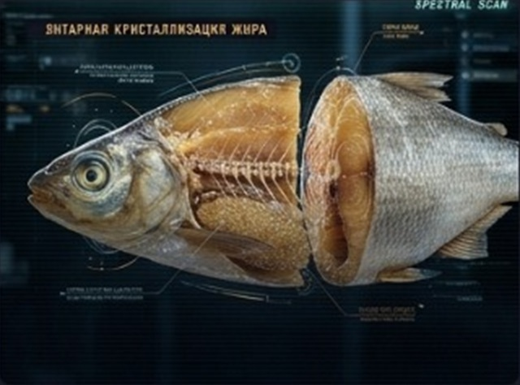
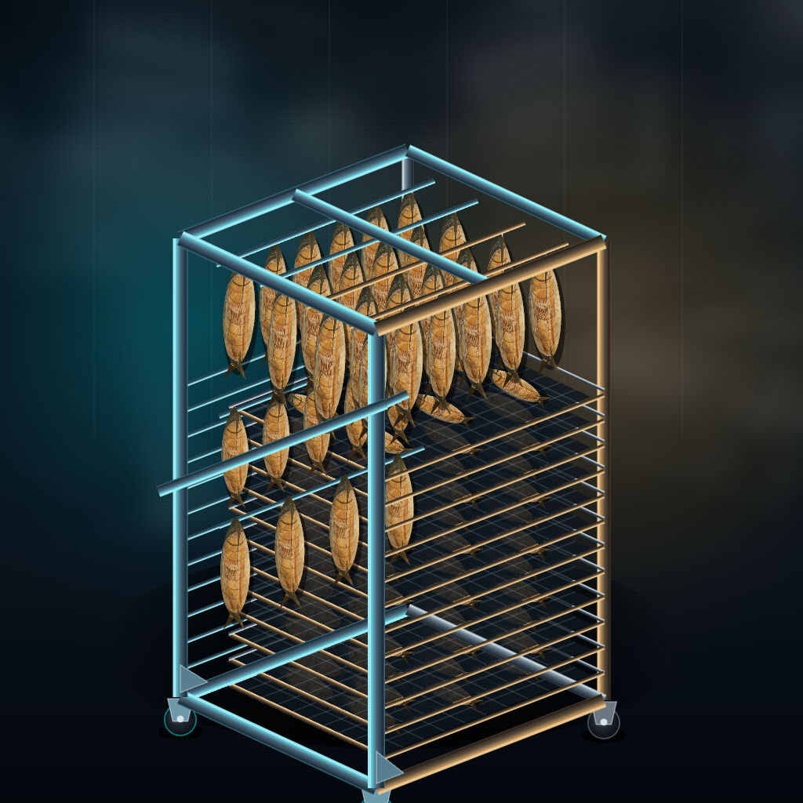

ПАРТИЯ В ЦЕХУ
Посол, навеска, сушка и выгрузка
источник: база знаний • расчёт
СЫРЬЁ В ПАРТИИ
1 850 кг
300 кг
камера: 15 × 170 = 2 550 кг
ВЫХОД ГОТОВОЙ
61.5% • В НОРМЕ
сухая 54.5%
норма 60–63%
мягкая 63.5%
1. ПОСОЛ В ТУЗЛУКЕ
water_drop
48–72
ч
соль ≈ 296 кг (12 мешков) • отмочка 2–3 ч
2. НАВЕСКА
shelves
5 286
рыб
≈ 353 прутка по 15 шт. • 11 тележек
3. СУШКА
thermostat
15.0–16.5
°C
старт rH ≥ 58% • аварийный предел 18°C
4. ВЫГРУЗКА
inventory_2
1 138
кг
≈ 1 339 пакетов KOMET или 5 еврокубов
⚛ СРЕЗ ГОТОВОЙ РЫБЫ
ВИМБА
a_w: 0.81

КАЛИБР М-2 (ВИМБА)
ТУШКА
350 г
ЖИРНОСТЬ
8.5%
A_W ГОТОВОЙ
0.81
checklist ЧЕК-ЛИСТ ЦЕХА • ВИМБА
0 / 0
shelves 15 тележек • камера AGHD-250
11 / 15 ЗАНЯТО

№1
ТЕЛЕЖКА №1
170 кг
30 прутков по 15 шт. • ≈ 486 рыб
170 кг на тележку
войдёт ещё ≈ 700 кг